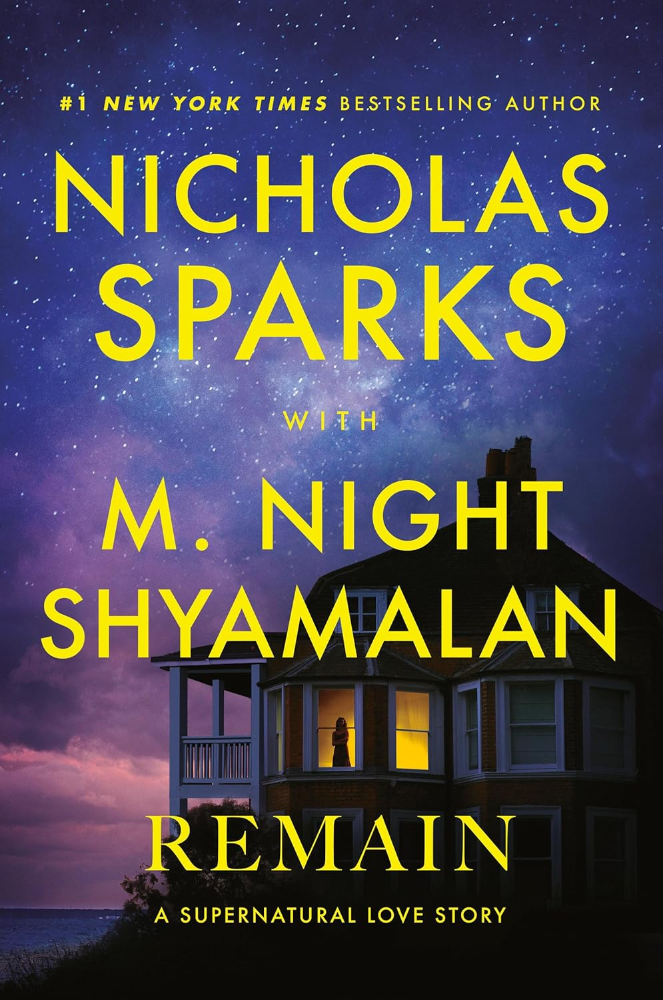
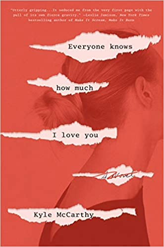
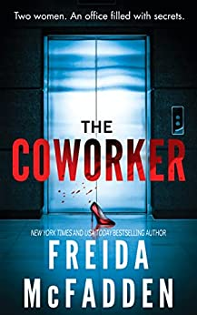
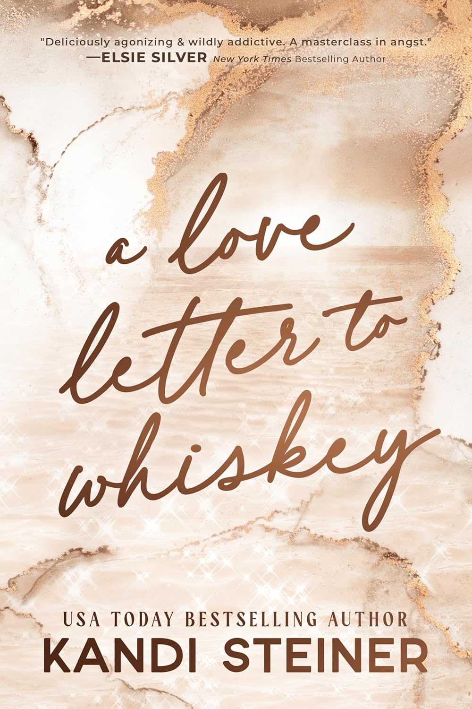
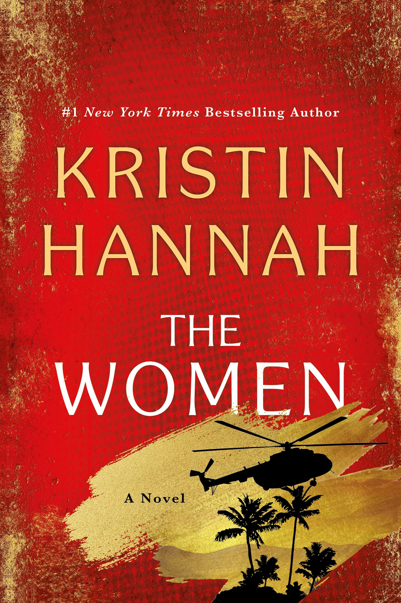
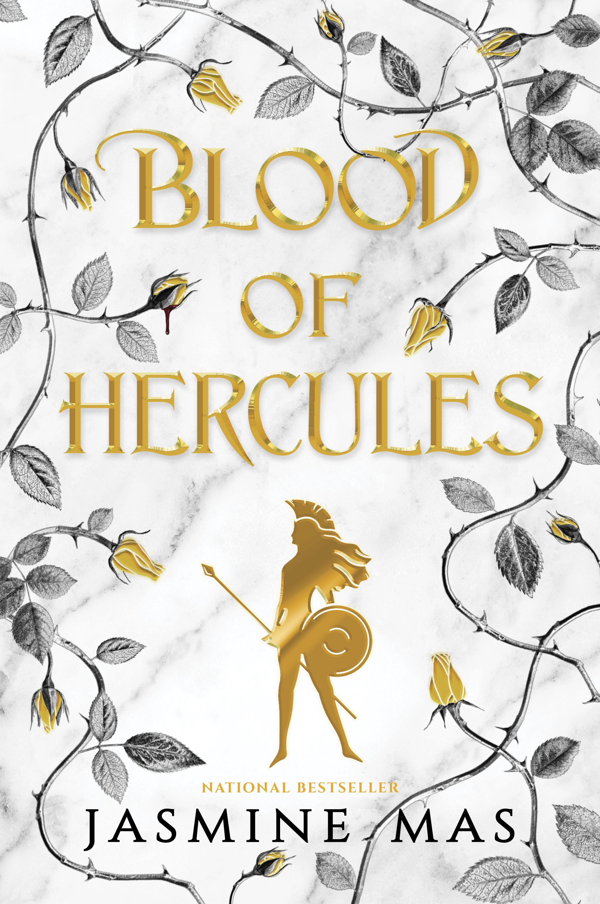
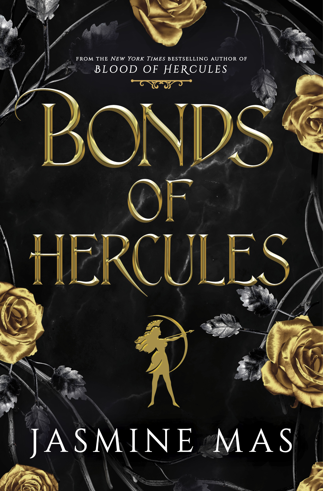
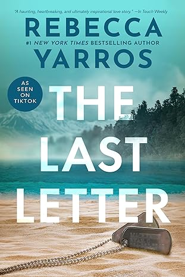
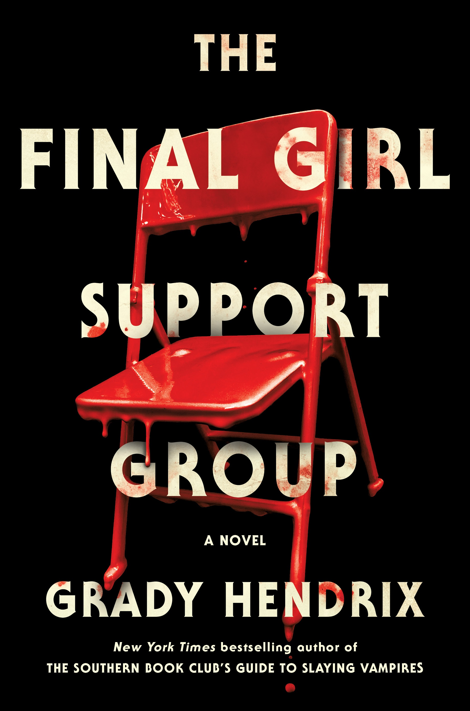

My Book Club Book Shelf
This is my collection of books that my book club has read through our first year together. The adult women in my family started this book club as we all love to read but we have so many different tastes in books that we wanted to share our favorite genres with each other. Each month we take turns picking a book for the group to read and then we meet to enjoy a good meal and discuss the book. We have read everything from romance to horror and everything in between. I love that we can all share our opinions and perspectives on the books, and we definitely have different opinions, on the books we read. This collection is my reminder of the great books we have read together and the fun times we have had discussing them.

Remain
Book | 2025 | Nicholas Sparks
Remain is the first book we read in our book club. It was definitely not what we expected, but that is what made it a perfect book to start our book club with. We all had different opinions on the book, I personally liked it, even if it did get a bit awkward at times.

Everyone Knows How Much I Love You
Book | 2020 | Kyle McCarthy
If I stick with the order of the books we read, this was the second book and it was definitely not my favorite. I think we all had high hopes for this one but it was just not what we expected it to be. However, this was probably one of our coolest meetups because it was right at Christmas time so we did a book exchange so it was so much fun to see what everyone got. Definitely a core memory for our book club.

The Coworker
Book | 2023 | Freida McFadden
Ok so I lied, this third book was actually a favorite meetup for our book club. The book was great most of us really enjoyed it and there was great discussions after. The best part of this meetup was the activity we each brought a favorite book we owned and bedazzled the covers. It was so much fun to see our different book choices and how we chose to decorate them. I still have mine on my bookshelf and it is a great reminder of our book club and the fun we had.

A Love Letter to Whiskey
Book | 2021 | Kandi Steiner
This was the fourth book we chose to read. I really enjoyed this book despite the frustrating characters. I felt passionate reading this book and found myself yelling at the characters in my head. I think that is a sign of a good book, when you feel so connected to the characters that you feel their emotions. At this meetup we also had a fun surprise...one of the original invited members who chose not to join decided to come to this meetup and she read the book so our book club grew by one more member. It was a great surprise and we were all so happy to have her join us.

The Women
Book | 2024 | Kristin Hannah
Our fifth book was a book that I was positive was going to bore me but I was soo wrong. I really related to the characters in this book from a past experience that even though it was extremely frustrating at times, I empathized with her and her situation. Was I in the same situation? No, but I could understand her feelings and her choices. I think this was one of my favorites this year and I am so glad I gave it a chance. This is why we started this book club, to read books we may not have chosen on our own and to share our opinions and perspectives with each other.

Blood of Hercules
Book | 2024 | Jasmine Mas
This next book happened to be my choice for the month and I was excited as my genre is definitely much different than that of the other members. Oh and I definitely judged this book by its cover as I went in thinking it was a young adult book but it was not. However, this was probably the first book that not everyone read and that kind of disappointed me as I enjoyed it and one of our other picky members also really enjoyed it. She even said it was her favorite of the year.

Bonds of Hercules
Book | 2025 | Jasmine Mas
This book was chosen by default as we all got really busy to meet this month so we decided to read the second book in the series that I had chosen the month before. I of course was excited as I had to find out what happened next with my favorite characters.

The Last Letter
Book | 2024 | Rebecca Yarros
This book will have you in tears from start to finish. It was a great book by that ending was definitely not needed. Did I love the book? Yes, but I was not a fan of the ending. I think it was a great book to read and discuss with my book club as we all had different opinions on the ending. Some of us loved it and some of us hated it. It was definitely a great discussion and I am glad we read this book together.

The Final Girl Support Group
Book | 2021 | Grady Hendrix
This is our current read for the month and it is definitely going to be interesting to see who actually reads it as a few of the members do not like horror books and if they didn't even read mine I am curious to see if they give this one a chance. I personally can't wait to start reading it.